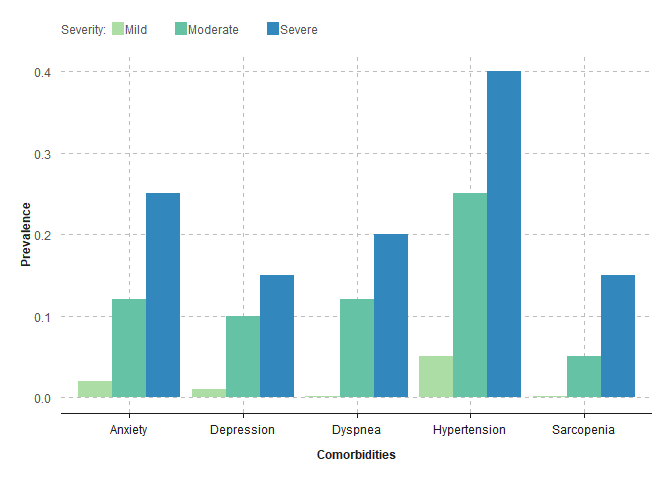
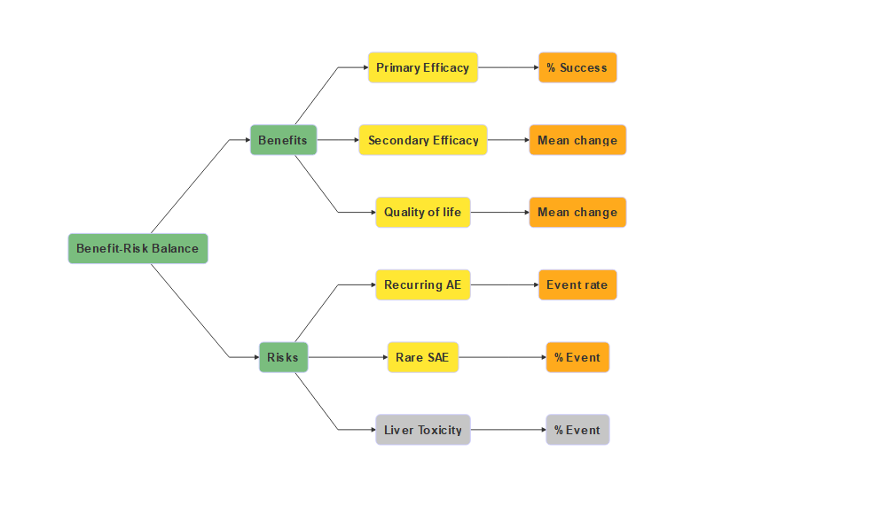
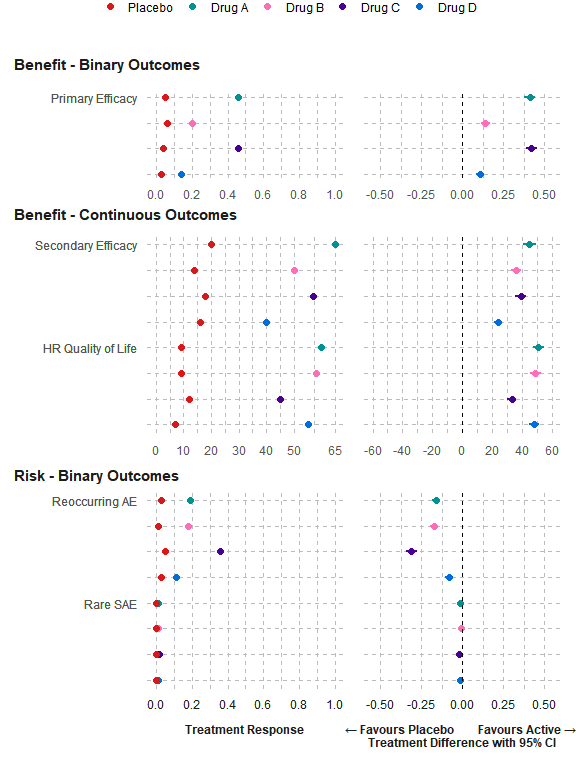
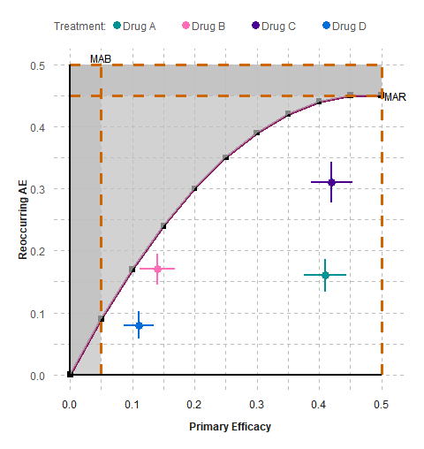
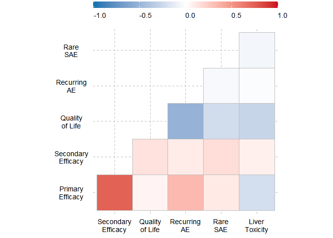
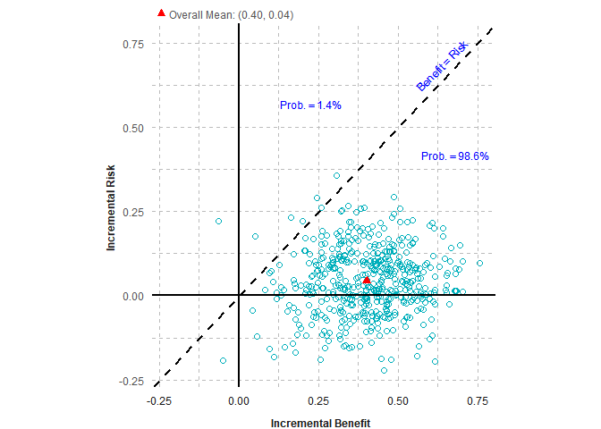
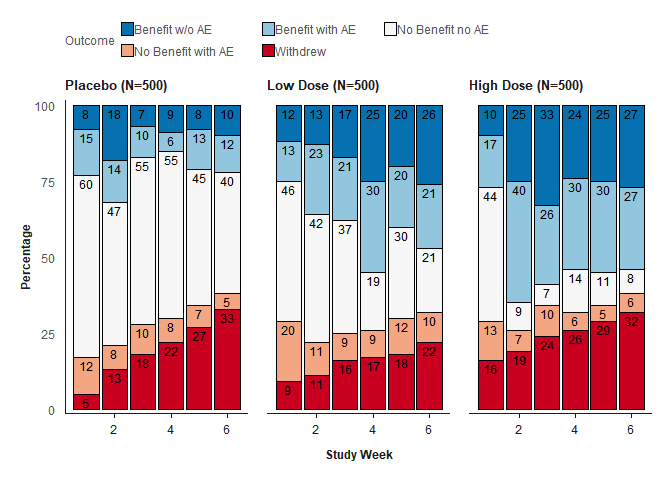
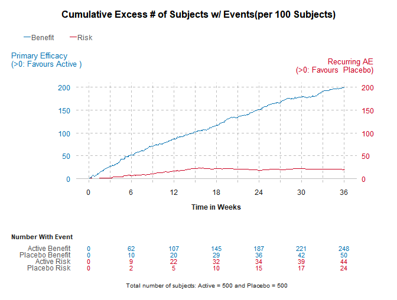

The goal of brcharts is to create benefit-risk charts in the publication: Colopy MW, Gakava L, Chen C. Planning Benefit-Risk Assessments Using Visualizations. Ther Innov Regul Sci. 2023 Nov;57(6):1123-1135. doi: 10.1007/s43441-023-00563-9. Epub 2023 Sep 8. PMID: 37682462.
Table of Contents
- Installation
- Figure 2 - Demographics (Pyramid Chart)
- Figure 3 - Disease History (Line Chart)
- Figure 4 - Comorbidities (Grouped Bar Chart)
- Figure 5 - Value Tree
- Figure 6 - Dot-Forest Plot
- Figure 7 - Trade-off Plot
- Figure 10 - Correlogram
- Figure 11 - Scatterplot
- Figure 12 - Composite Outcome (Stacked Bar Chart)
- Figure 13 - Cumulative Excess Plot
Installation
You can install the development version of brcharts from GitHub with:
# install.packages("devtools")
devtools::install_github("BR-Visualization/brcharts")Figure 2 - Demographics (Pyramid Chart)

Click to learn more
Pyramid bar chart: how to read
- The horizontal bars represent the prevalence of each disease type (A or B) in the patient population ranging from 0 to 30 (x 100,000) on the X-axis.
- The bars are color coded for females (teal) and males (yellow).
- The bars are stacked according to 5 or 10-year age groups (0-85+ years) specified on the Y-axis.
Key Conclusions:
The left chart shows that type A has more females than males, while type B has more males than females.
The highest disease prevalence in type A is centered around ages 50-59 years, while centered around ages 70-74 years in type B.
The difference in distributions between disease types A and B can impact patient engagement, patient enrollment, and generalization of results.
Stratifying the randomization on disease type might be necessary if clinical evidence is needed for disease type B, particularly for younger age groups.Click to view sample code
demography |>
dplyr::mutate(
Type = as.factor(paste0("Type ", Type)),
figprev = ifelse(
Gender == "Females", -1 * Prevalence / 100000, Prevalence / 100000
),
Sex = Gender
) |>
pyramid_chart(
levelvar = "Type", xvar = "figprev", yvar = "Age",
groupvar = "Sex", alpha_set = 0.7, chartcolors = colfun()$fig2_colors,
xlab = "Prevalence (x 100 000)"
)Figure 3 - Disease History (Line Chart)

Click to learn more
Natural History plot: how to read
- The Y-axis displays the functional score, ranging from 0-50 points on a fictional Quality of Life scale.
- The X-axis displays the years since onset of disease, ranging from 0-14 years.
- The horizontal bars represent seven disease manifestations (e.g. first symptom, …, death) in the patent population.
- The bars span the number of years that a manifestation might appear. For example, death typically occurs between 8 and 14 years since onset of disease.
- The bars are color coded according to the three horizonal gray bands of functional scores (mild, moderate or severe) and the legend at the top.
Key Conclusions:
The dark gray curve displays the downward trend in functional score or quality of life over time.
The graph show that the disease manifestations are sequential, hence do not necessarily occur at the same time. Patient follow-up will need to be several years to capture several of the functional domains.
History of disease progression also impacts patient engagement, since newly diagnosed patients might have no experience with more serious manifestations, such as mental function.Click to view sample code
func <- function(x) 47.982 - 0.0305 * x - 0.57525 * x^2 + 0.0245 * x^3
line_chart(
func = func,
data_bands = data_bands,
data_lines = data_lines,
xmin = 0,
xmax = 14.2,
ymin = 0,
ymax = 50,
xbreaks = seq(0, 14, 2),
ybreaks = seq(0, 50, 5),
xlab = "Years Since Onset",
ylab = "Functional Score",
legend_title = "Severity: "
)Figure 4 - Comorbidities (Grouped Bar Chart)

Click to learn more
Grouped bar chart: how to read
- The Y-axis displays the prevalence (%) of disease comorbidities in the patient population, ranging from 0 to 40%.
- The X-axis displays five comorbidities (anxiety, …, sarcopenia), each categorized by 3 severity levels (mild, moderate, or severe) color coded according to the legend at the top.
Key Conclusions:
The graph displays the background rates of comorbidities, which is useful in designing patient preference studies. For example, patients might place high importance in a drug that reduces severe hypertension.
A display of background rates is also useful in determining whether a comorbidity is likely due to the drug or the disease.Click to view sample code
grouped_barchart(
data = comorbidities, xvar = "Comorbidities",
yvar = "Prevalence", groupvar = "Severity",
chartcolors = colfun()$fig4_colors
)Figure 5 - Value Tree

Click to learn more
Value Tree: how to read
- A value tree is a diagram that includes all key benefits and risks identified by the stakeholder or decision-makers to be important to the decision, particular to the patient population considered.
- The tree has no quantitative values, but rather displays outcomes valued by decision makers.
- The benefits typically include primary and secondary clinical endpoints, and a Quality of Life measure. Occasionally it includes a measure of convenience and out-of-pocket expense.
- Benefits are statistically characterized at the right as means, mean change from baseline, proportions (ex.% Success), or rates.
- The risks are typically organ toxicities or adverse events of special interest and can be statistically characterized as proportions or rates (ex. incidence per 100 subjects or per 10,000 subject-years).
- The value tree can be used to facilitate team discussions about which outcomes to capture in a clinical study.
- Value trees can start with many branches that can be pruned or combined to form a smaller tree that best assess the tradeoffs between key benefits and key risks.
- If two outcomes are highly correlated, then only one should be used, so as to avoid double counting.
- The same outcome can be specified two different ways, either a clinical endpoint (ex. blood pressure) or a patient-focused outcome (ex. ability to climb stairs). The decision makers would need to decide which one to keep.
Key Conclusions:
The size of this value tree was reduced by grouping frequently occurring adverse events into a single “recurring AE” outcome and grouping rare but serious adverse events into a single outcome.
While also a rare and serious, liver toxicity was colored gray because it only has a potential association with treatments.
Both primary and secondary efficacy clinical endpoints were included because they were not correlated. Quality of Life was included to capture what was important to the subjects.Click to view sample code
value_tree(
diagram =
"graph LR;
A(<B>Benefit-Risk Balance</B>)-->B(<B>Benefits</B>)
B-->C(<B>Primary Efficacy</B>)
B-->D(<B>Secondary Efficacy</B>)
B-->E(<B>Quality of life</B>)
C-->F(<B>% Success</B>)
D-->G(<B>Mean change</B>)
E-->H(<B>Mean change</B>)
A-->I(<B>Risks</B>)
I-->J(<B>Recurring AE</B>)
I-->K(<B>Rare SAE</B>)
I-->L(<B>Liver Toxicity</B>)
J-->M(<B>Event rate</B>)
K-->N(<B>% Event</B>)
L-->O(<B>% Event</B>)
style A fill:#7ABD7E
style B fill:#7ABD7E
style I fill:#7ABD7E
style C fill:#FFE733
style D fill:#FFE733
style E fill:#FFE733
style J fill:#FFE733
style K fill:#FFE733
style L fill:#C6C6C6
style F fill: #FFAA1C
style G fill: #FFAA1C
style H fill: #FFAA1C
style M fill: #FFAA1C
style N fill: #FFAA1C
style O fill: #C6C6C6
"
)Figure 6 - Dot-Forest Plot

Click to learn more
Dot-Forest plot: how to read
- The two-panel forest plot displays point estimates for each treatment effect on the left side and point estimates (and 95% confidence intervals) for each treatment difference on the right side.
- Each color indicates a different treatment (Placebo, Drugs A, B, C, and D), specified in the legend above the plot.
- On the Y-axis, there is one row for each outcome’s treatment effects and treatment difference.
- Outcomes with different summary statistics (ex. means for continuous data or proportions for binary) are displayed on separate graphs that share a common X-axis.
- The X-axis displays the range of values for summary statistics with a vertical reference line at zero for no absolute treatment difference or at one for no relative treatment difference.
- Below the X-axis is notation indicating that treatment differences favorable to the active drug appear to the right and differences favorable to placebo appear to the left.
Key Conclusions:
The forest plot gives a visual comparison of all key benefits and key risks simultaneously.
In this example, Drugs A and C have greater efficacy for the primary endpoint, but there are tradeoffs with quality of life and reoccurring AEs.
The hypothetical treatments do not differ on the outcome for the rare SAE, so that outcome might be dropped from the assessment.
The confidence intervals around the treatment differences display their uncertainty or statistical error, indicating possible necessity for a more specific SAE for the hypothetical investigational drug.
The forest plot can be repeated for different patient subgroups, to assess the robustness of the overall assessment.
It is important to not confuse the forest plot with the similar looking meta-analysis plot, which has multiple rows for different studies but for the same endpoint.Click to view sample code
forest_dot_plot(effects_table,
filters = "None",
category = "All",
type_graph = "Absolute risk",
type_risk = "Crude proportions",
select_nnx = "Y",
x_scale_fixed_free = "Fixed",
ci_method = "Calculated",
exclude_outcome = "Liver"
)Figure 7 - Trade-off Plot

Click to learn more
Trade-Off plot: how to read
- A scatter plot displays the clinical data for one benefit (X-axis) and one risk (Y-axis).
- Both benefit and risk can be on different measures, such as proportion, rate, or mean.
- For each treatment, the point estimates for benefit and risk are displayed as a single dot at its X-Y coordinate.
- The 95% confidence interval for the benefit is horizonal and the 95% confidence interval for the risk is vertical.
- Medical judgement is added by assigning thresholds for minimal acceptable benefit (MAB- vertical orange line) and maximum acceptable risk (MAR- orange horizonal line).
- The dark gray areas to the right of MAB and above the MAR are designated as unacceptance regions.
- A tradeoff threshold curve is created by assigning a risk tolerance to different levels of benefit. These black dots are connected by a solid purple segmented or curved line.
- The white area below the threshold or tradeoff curve is the acceptance region.
Key Conclusions:
For this hypothetical tradeoff plot, both the benefit and risk are the difference in proportions between four rival drug and the standard of care.
Since the four drugs were approved by regulators, the tradeoff curve was drawn such that drugs appear in the acceptance region.
The tradeoff curve shows that subjects are willing to accept a higher risk for a higher benefit.
The MAB and MAR could be obtained from the company strategy TPVP document.
Ideally, a drug closest to the lower right corner would be the most favorable option, and drug closest to the upper left corner would be least favorable.
Drug A is more favorable than drugs B and C. There is a tradeoff between Drugs A and D. Severe subjects may prefer Drug A for its higher benefit, and mild subjects may choose drug D for its lower risk.
The plot can display other combinations of one benefit and one risk, as well as for different patient subgroups, dose levels, and studies, in support of the generalizability of the investigational drug.
Ideally, the investigational drug will appear in an area of unmet need in the acceptance region.Click to view sample code
generate_tradeoff_plot(
data = effects_table, filter = "None", category = "All",
benefit = "Primary Efficacy", risk = "Reoccurring AE",
type_risk = "Crude proportions", type_graph = "Absolute risk",
ci = "Yes", ci_method = "Calculated", cl = 0.95,
mab = 0.05,
mar = 0.45,
threshold = "Segmented line",
ratio = 4,
b1 = 0.05,
b2 = 0.1,
b3 = 0.15,
b4 = 0.2,
b5 = 0.25,
b6 = 0.3,
b7 = 0.35,
b8 = 0.4,
b9 = 0.45,
b10 = 0.5,
r1 = 0.09,
r2 = 0.17,
r3 = 0.24,
r4 = 0.3,
r5 = 0.35,
r6 = 0.39,
r7 = 0.42,
r8 = 0.44,
r9 = 0.45,
r10 = 0.45,
testdrug = "Yes",
type_scale = "Free",
lower_x = 0,
upper_x = 0.5,
lower_y = 0,
upper_y = 0.5,
chartcolors <- colfun()$fig7_colors
)Figure 10 - Correlogram

Click to learn more
Correlogram: how to read
- Both the benefit and risk outcomes appear on the X-axis and Y-axis.
- The strength of correlation between outcome pair is displayed at their intersection.
- Each correlation is color coded according to the legend at the top, ranging from dark blue (-1.0) to dark red (+1.0).
- Each correlation along the diagonal is dark red because it’s the correlation of an outcome with itself (i.e. =1.0)
- The correlations above the diagonal are blank because they are the mirror image of the correlations below the diagonal.
- The underlying correlation coefficients are calculated using formulas specific to the type of data (e.g. binary ordinal, or continuous).
Key Conclusions:
A positive correlation is expected between benefits and expected between risk. A negative correlation might appear between a benefit and risk. This would suggest that subject experiencing the benefit also experience the risk.
As expected, there is a high correlation between the primary and secondary efficacy outcomes. The team might decide to drop the secondary efficacy outcome if there is a concern with double counting.
There is also an explainable negative correlation between outcomes for quality-of-life and recurring AE. The medium positive correlation between recurring AE and primary efficacy is difficult to explain.Click to view sample code
create_correlogram(corr)Figure 11 - Scatterplot

Click to learn more
Scatter plot of Continuous Outcomes: how to read
- Each point indicates the predictive incremental probabilities associated with experiencing a benefit and a risk. The probabilities are estimated using logistic regression models with demographic and baseline covariates, but separately for one benefit and one risk.
- The X-axis depicts the predicted incremental benefit.
- The Y-axis depicts the predicted incremental risk.
- The red triangle indicates the overall mean of predictive incremental probabilities associated with experiencing a benefit and a risk.
- The diagonal threshold depicts the benefit and risk having equal weight.
- As the slope increases, the benefit receives more weight than the risk, meaning subjects are willing to accept much more risk in exchange for more benefit.
- For subjects in the upper left area, the risk exceeds the benefit.
- For subjects in the lower right area, the benefit exceeds the risk.
Key Conclusions:
The scatter plot of predictive incremental probabilities illustrates that 98.6% of subjects have benefit-risk predictive incremental probabilities that fall within the acceptance region, defined as the region below the diagonal threshold. Besides displaying subject variability, it indicates which subjects are most likely to benefit from the investigational drug.Click to view sample code
scatter_plot(scatterplot, outcome = c("Benefit", "Risk"))Figure 12 - Composite Outcome (Stacked Bar Chart)

Click to learn more
Stacked Bar chart of Ordinal Composite Outcomes: how to read
- This visualization is comprised of a separate chart for each dose level placebo, low dose and high dose.
- The Y-axis displays the percentage of subjects 0 to 100%.
- The X-axis displays the study visits by study week.
- Each stacked bar in the display area is comprised of five bars representing the five possible outcomes defined in the legend above the graph.
- The five ordinal outcomes range from best scenario (e.g. dark blue = benefit without AE) to worst scenario (e.g., dark red = withdrew).
- The outcome category is determined for each subject at each study week. Once subjects withdraw, they continued to be counted in the “Withdrew” category at subsequent visits.
- The visualization compares the distribution of the five ordinal outcomes within a visit, across visits, and across doses.
Key Conclusions:
In this hypothetical example, the placebo control group has more subjects with “No Benefit No AE.” The proportion of subjects with benefits is the highest in the high-dose group.
The most favorable outcome of “Benefit-No AE” is not only sustainable but the percentage of subjects is increasing.
It is expected that the percentage of subjects withdrawing increase over time, due to placebo subjects receiving no benefit and other subjects experiencing adverse events.Click to view sample code
stacked_barchart(
data = comp_outcome,
chartcolors = colfun()$fig12_colors,
xlabel = "Study Week"
)Figure 13 - Cumulative Excess Plot

Click to learn more
Cumulative Excess Plot: how to read
- The Y-axis displays the cumulative excess incidence per 100 subjects, ranging from 0 to maximum observed value.
- The X-axis displays the study week, ranging from 0 to end of follow-up.
- The number of subjects with events are displayed below the X-axis, by either benefit or risk and by either active treatment or placebo group.
- The blue trend line represents the difference in cumulative incidence of the benefit outcome (e.g., efficacy) between the active treatment and placebo groups.
- The red trend line represents the difference in cumulative incidence of the risk outcome (e.g., adverse event) between the active treatment and placebo groups.
- The cumulative incidence rate per 100 subjects is calculated by (1) counting the number of subjects who have experience one or more occurrences of the event, and (2) dividing the count by 100 subjects.
- The cumulative excess number of subjects with an event per 100 subjects is calculated by subtracting the rate for placebo from the rate for active treatment.
- Unlike a similar looking Kaplan-Meier plot, the trend line for excess incidence can either increase or decrease from one time point to the next.
- If the line for benefit is greater than 0, this indicates the active treatment is favored over the placebo.
- If the line risk is greater than 0, this indicates the placebo arm is favored over the active treatment.
Key Conclusions:
The Cumulative Excess plot assessed whether the binary events for a benefit and risk occur concurrently and whether the profile is sustainable. The two positive trends indicate that both benefit and risk are higher for the active drug than placebo, but not at the same rate. This is an ideal scenario where the benefit increased with drug exposure while the risk plateaued.Click to view sample code
gensurv_combined(
df_plot = cumexcess, subjects_pt = 500, visits_pt = 6,
df_table = cumexcess, fig_colors_pt = colfun()$fig13_colors,
rel_heights_table = c(1, 0.4),
legend_position_p = c(-0.2, 1.45),
titlename =
"Cumulative Excess # of Subjects w/ Events(per 100 Subjects)"
)